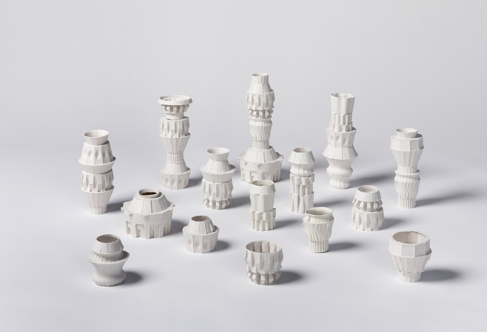
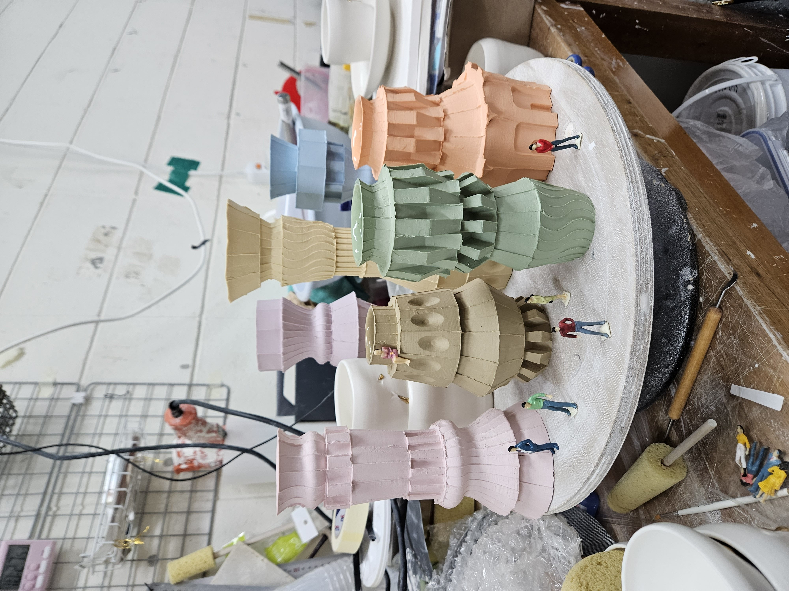
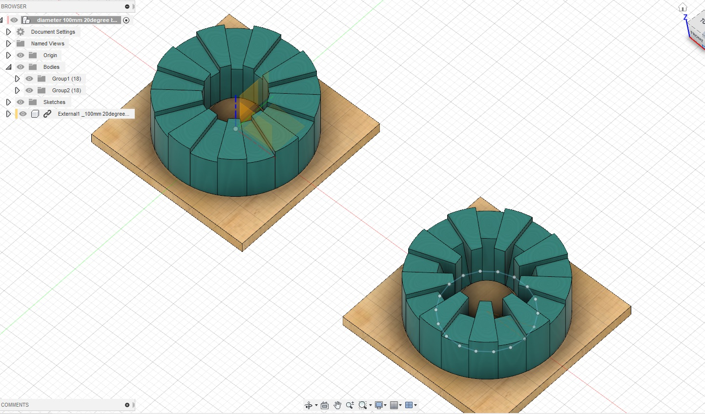
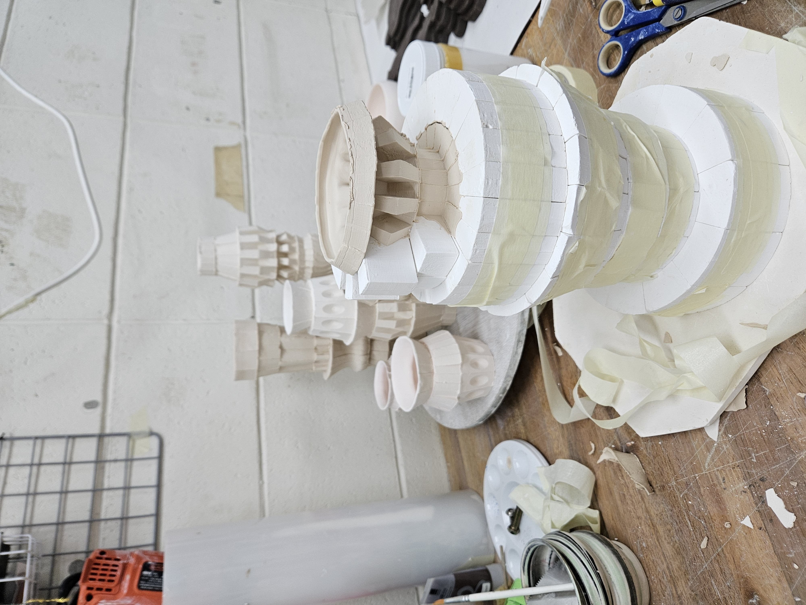
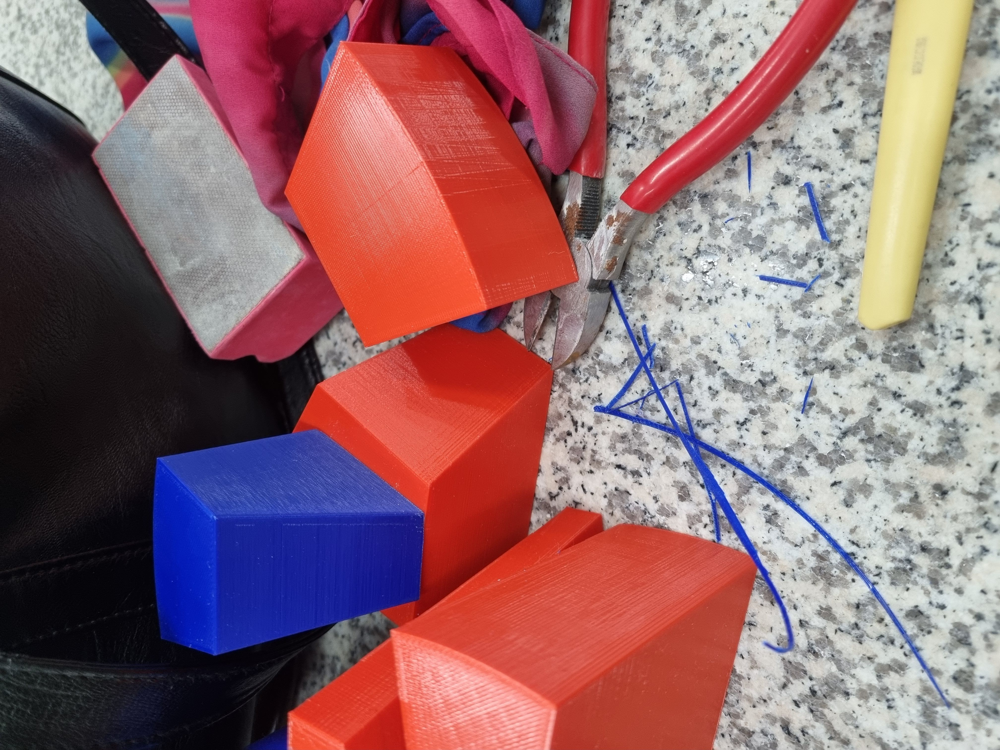
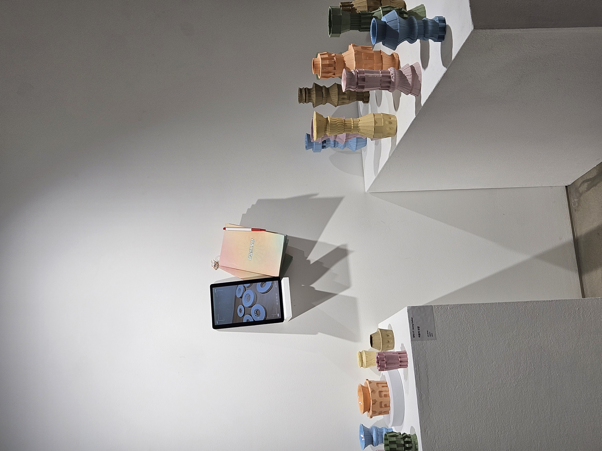

본 작업은 도자기제작 방식 중 슬립캐스팅 기법을 활용한 관객 참여형 작품입니다. 마음의 모양이라는 질문지를 통해 자신의 주 감정을 알아보고, 그에 해당하는 석고모듈을 쌓아올리며 감정에 해당하는 형태의 오브제를 현실에서 직접 만지고 느껴보는 과정을 통해 자신의 마음을 마주하고 사유해볼 수 있는 경험을 선사합니다.
JORIS LINK 작가의 작업을 모티브로 하여 3D 모델링 및 3D 프린팅으로 석고 모듈 제작을 진행하였습니다. 또한 단순히 감정에서 연상되는 색감이 아닌, 주로 보색을 활용하여 반대되는 이미지의 색감을 지정해 감정에 깊이 몰입하기 보다는 한발 떨어져 사유할 수 있는 경험이 되도록 구성하였습니다.




